I. Аномальная Стена
Аномальная Стена — Великая перманентная аномалия континентального масштаба. Она возникла из временной аномалии 10-го рейтинга во время Великого выброса у Кинжала Убийцы Родни примерно в 20–30 ПБ. Выброс не разошёлся обычным пятном: он зацепился за напряжённый географический шов Хребта Мира и превратился в протяжённый фронт несогласованной реальности.
Сегодня Стена тянется от северного предела у Шайол Гул вдоль Хребта Мира и далее к южным широтам. Её исследованная линия дрейфует: отдельные участки могут смещаться на десятки миль, образовывать локальные «языки» и открывать редкие окна перехода. Южное продолжение теряется в плохо картографированных широтах; глобальная форма фронта достоверно не установлена.
Почему фронт движется
Известно, что крупные аномальные события, масштабное направление Единой Силы, войны и операции стабилизации нередко совпадают с последующими сдвигами фронта. Стражи и исследователи называют это перераспределением натяжения Узора, однако это остаётся рабочей теорией, а не доказанной физикой Стены.
Две области, три подзоны
| Область | Подзона | Смысл |
|---|---|---|
| Ореол (Тень) | Внешняя Тень | Реальность шумит, но подготовленная группа способна работать и двигаться. |
| Внутренняя Тень | Искажения сильнее, маршруты нестабильны, безопасное движение требует подготовки. | |
| Ядро (Гребень) | Гребень | Центральная область прямого слома реальности. Обычный пеший проход практически невозможен. |
Айил и Стражи Проходов
В течение первого столетия после появления Стены айил переопределили часть своей старой миссии. Одним из новых направлений стали Стражи Проходов: хранители перевалов, окон дрейфа и караванных коридоров. Их обычная подготовка — дисциплина, навигация, выживание и многолетнее знание фронта — сама по себе не является сверхъестественной Иерархией.
Иерархия Аномальной Стены — отдельная связь с самой Стеной, доступная лишь части Стражей Проходов и другим допущенным людям. Она возникла в айильской среде, но не является расово закрытой.
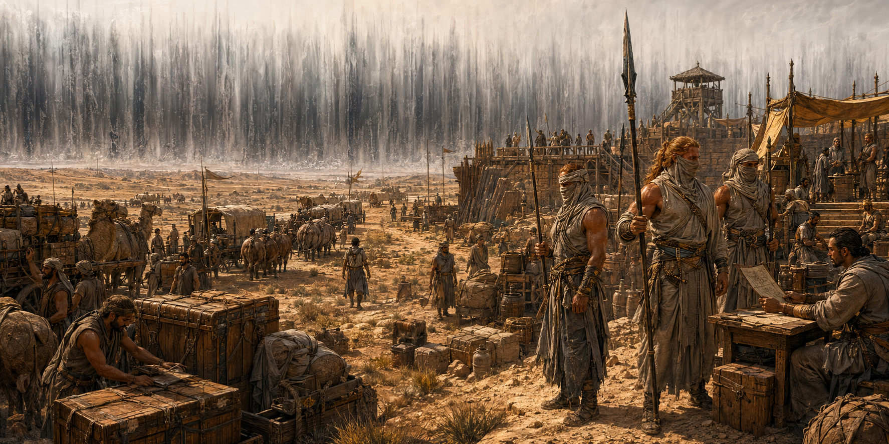
Авиенда и Узел Ядра
В первые десятилетия после рождения Стены Авиенда первой из известных людей достигла Ядра и установила связь с центральным источником феномена — Узлом Ядра, который исследователи также называют Реактором Стены. Ядро признало её первым Проводником, вершиной новой системы допуска.
Иерархия не собирает энергию с нижестоящих. Узел выдаёт её непосредственно по допуску: ранг определяет, какой объём воздействия носитель способен безопасно выдерживать и использовать.
Якоря
Примерно к 50 ПБ вдоль отдельных участков фронта была развёрнута сеть стационарных Арк — Якорей. Их официально известная функция — слушать ритм Стены и локально замедлять дрейф, не превращаясь при этом в щит или барьер. Сеть нескольких работающих Якорей помогает прогнозировать поведение фронта и окна прохода.
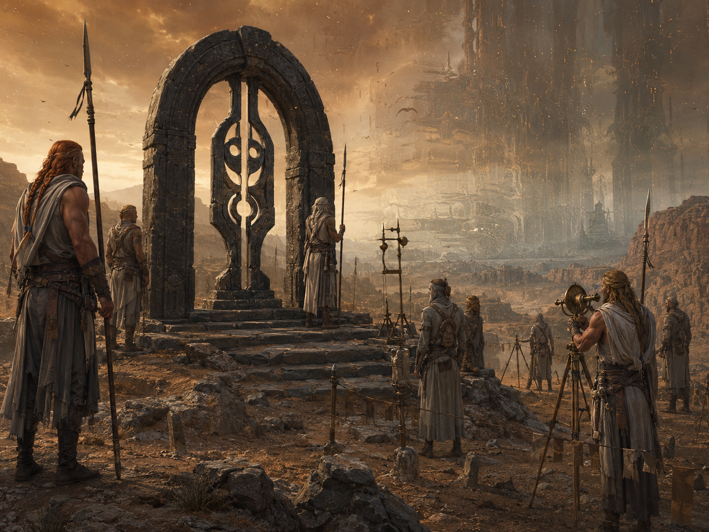
II. Законы Ореола
Шум Узора
Внутри Стены сбиваются ориентиры, чувство времени и причинность. Без проводника или надёжных меток персонаж совершает проверки Мудрости (Выживание) для навигации с помехой. Продолжительный отдых возможен по обычным правилам, если обстановка действительно позволяет отдыхать, но сам по себе не восстанавливает STAB внутри Ореола.
Дрейф
Раз в сутки пребывания в Ореоле — либо после крупного события — Мастер может определить локальный дрейф броском 1d6: 1–3 без сдвига; 4–5 появляется локальный язык фронта; 6 возникает сильный язык и вторичная вспышка — малый разрыв или выброс существ.
Стабильность группы — STAB
При входе в Ореол группа получает STAB = 10 + средний бонус мастерства группы, округлённый вниз. Например, если у трёх персонажей бонус мастерства +4, а у одного +3, среднее равно 3,75 и исходный STAB равен 13.
Каждый час в Ореоле выбирается лидер маршрута. Он выполняет проверку «Держать маршрут»: СЛ 14 во Внешней Тени и СЛ 17 во Внутренней. При обычном провале STAB уменьшается на 1. При провале на 5 или больше STAB уменьшается на 2 и дополнительно происходит Удар среды.
Лидер выбирает подход, который действительно соответствует ситуации: Мудрость (Выживание) — маршрут и рельеф; Мудрость (Восприятие) — подмена ориентиров и петли; Интеллект (Расследование) — закономерности дрейфа; Интеллект (Единая Сила) — только для направляющего, который считывает структуру через нити Единой Силы. Другой персонаж может использовать стандартное действие «Помощь», если способен содержательно помочь выбранным способом.
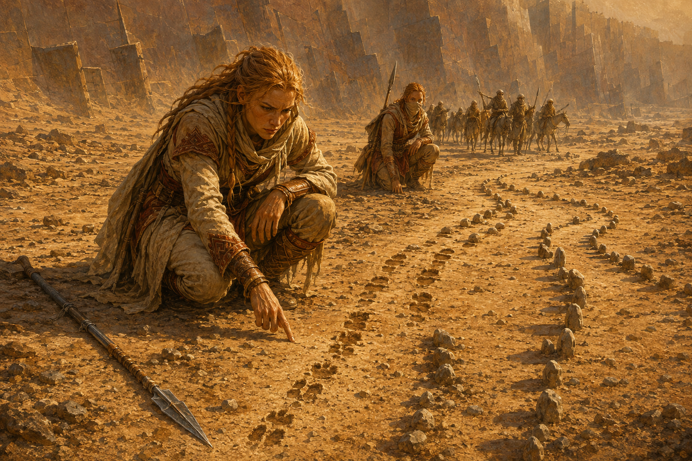
Вне Стены STAB возвращается к исходному значению после продолжительного отдыха. В Ореоле восстановление возможно только в безопасном лагере или специальным способом — через проводника, ритуал, тер'ангриал или иной прямо установленный эффект. Продолжительный отдых в безопасном лагере восстанавливает STAB до исходного значения группы; обычный продолжительный отдых внутри Ореола вне безопасного лагеря STAB не восстанавливает.
Пороговые последствия STAB
| STAB | Состояние | Последствие |
|---|---|---|
| 9–7 | Нестабильность | Случайный персонаж делает спасбросок Мудрости СЛ 14. При провале бросьте 1d2: 1 — 1 уровень истощения; 2 — Сбой восприятия: помеха на следующую его проверку Мудрости (Восприятие) или «Держать маршрут». |
| 6–4 | Петли и срывы | Группа теряет 1d4 часа и получает один Удар среды. |
| 3–1 | Пролом формы | Каждый участник делает спасбросок Телосложения СЛ 15: провал — 2 уровня истощения, успех — 1. Затем происходит одна встреча с существами аномального происхождения, соответствующими текущему участку Стены. |
| 0 | Срыв | Группа проваливается в Ядро или локальный карман Ядра. |
Удар среды
| 1d8 | Эффект |
|---|---|
| 1 | Энергетический выброс. Каждый участник сопровождаемой группы: Ловкость СЛ 14; провал — 3d6 силового урона, успех — половина. |
| 2 | Холод или жара без причины. Телосложение СЛ 14; провал — 1 уровень истощения. |
| 3 | Сдвиг гравитации. Ловкость СЛ 14; провал — персонаж падает ничком, скорость 0 до начала его следующего хода. |
| 4 | Сбой звука / эхо мыслей. Мудрость СЛ 14; провал — помеха на броски атаки до конца следующего хода. |
| 5 | Ложный ориентир. Следующая проверка «Держать маршрут» совершается с помехой; если она провалена, группа дополнительно теряет 1d4 часа. |
| 6 | Сонный прилив. Харизма СЛ 14; провал — на 10 минут помеха на спасброски Телосложения для поддержания концентрации. |
| 7 | Тонкая трещина. Возникает малый разрыв: одно существо или 1d4 мелких существ аномального происхождения. |
| 8 | Метка Узора. Случайное затронутое существо получает Метку Узора; бросьте 1d6 по таблице ниже. |
III. Метки Узора и Ядро
Метки Узора
| 1d6 | Метка | Эффект |
|---|---|---|
| 1 | Запах шва | Существо с тегом «Аномальное происхождение», выбирая между равноценными доступными целями, предпочитает носителя Метки, если нет более веской тактической причины. |
| 2 | Сдвиг сна | Продолжительный отдых восстанавливает только половину недостающих хитов и половину обычного количества Костей Хитов, округляя вверх. Ячейки и прочие ресурсы восстанавливаются обычно. |
| 3 | Дыра во времени | Не чаще 1 раза за 24 часа в начале хода Мастер может лишить персонажа действия. Перемещение, бонусное действие и реакции сохраняются. |
| 4 | Осколок памяти | Игрок и Мастер выбирают один эпизод последних 24 часов, который персонаж перестаёт помнить. Метка не удаляет навыки, плетения, классовые способности, характеристики или основные знания личности. |
| 5 | Резонанс | 1 раз за 24 часа — преимущество на проверку, непосредственно направленную на обнаружение или понимание аномалии. Первые 24 часа после получения Метки — уязвимость к психическому урону. |
| 6 | Редкая удача | 1/продолжительный отдых после броска атаки, спасброска или проверки, но до объявления результата, добавить 1d4. При первом использовании этой Метки персонаж получает 1 уровень истощения. |
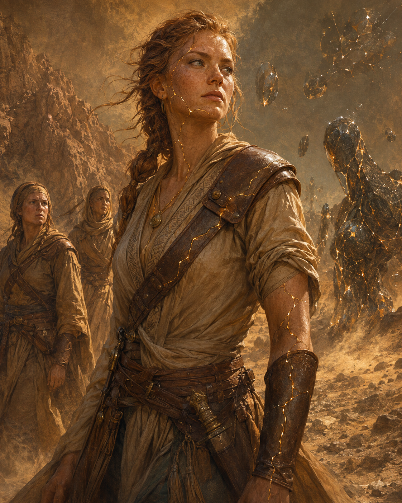
В безопасном лагере, стационарном посту Стражей Проходов, у Ордена или в другом месте со специалистом и подходящими средствами одна выбранная Метка может быть очищена за время продолжительного отдыха без проверки. Разные Метки могут существовать одновременно; одинаковые эффекты не складываются.
Правило невозможности Ядра
Обычный проход через Ядро пешком считается практически невозможным. Если группа всё же входит в Гребень, каждые 10 минут каждый участник делает два спасброска.
| Спасбросок | Успех | Провал |
|---|---|---|
| Телосложение СЛ 18 | 1 уровень истощения и половина 4d10 урона. | 2 уровня истощения и полный 4d10 урона. |
| Мудрость СЛ 18 | Без дополнительного эффекта. | Слом формы — бросьте 1d4 или выберите подходящий вариант. |
Тип 4d10 определяет Мастер по характеру участка: силовой или психический.
Слом формы
| 1d4 | Результат |
|---|---|
| 1 | Паника. Персонаж испуган до конца своего следующего хода. Само Ядро считается источником страха; пока эффект действует, персонаж не может добровольно двигаться глубже в Ядро. |
| 2 | Ступор. Скорость 0; нельзя совершать действия и реакции до конца следующего хода. |
| 3 | Петля. Первое перемещение до конца следующего хода расходуется нормально, но после него персонаж возвращается в точку, откуда начал перемещение. |
| 4 | Подмена восприятия. До конца следующего хода помеха на броски атаки и проверки Мудрости (Восприятие). |
Внутри Ядра обычная навигация не даёт надёжного результата. Работают жёсткие метки и маяки, высококлассный проводник или специальный метод пересечения.
IV. Пересечение Стены
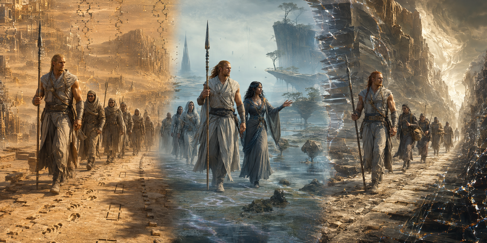
Окно дрейфа
Переход состоит из 6 сегментов. На каждом сегменте лидер маршрута обязательно совершает одну проверку «Держать маршрут» СЛ 17. Дополнительно Мастер может ввести событие среды. За весь переход допускается не более 2 боевых встреч; остальные события создают давление среды. После второго и каждого последующего проваленного сегмента Мастер может объявить окно сорванным и перевести группу в локальный карман Ядра, если состояние окна и сцена это допускают.
После второго проваленного сегмента и после каждого последующего провала Мастер получает право объявить окно сорванным и перевести группу в локальный карман Ядра, если состояние сцены это допускает. Обычные последствия самих провалов сохраняются.
Сквозь Сон
Обход Стены через Тел’аран’риод. Требуется сновидец/проводник либо иной редкий метод входа и заранее определённый якорь выхода — место, предмет или знание, позволяющее зафиксировать конечную точку.
Назначенный проводник сна совершает три проверки Мудрости (Проницательность): Вход СЛ 15, Транзит СЛ 17, Выход СЛ 15. Черты, которые прямо улучшают соответствующие действия в Тел’аран’риоде, работают обычно.
1 провал: случайный участник получает Метку Узора. 2 провала: группа выходит не в запланированное время или не у запланированного якоря выхода, оставаясь на нужной стороне Стены. 3 провала: до завершения перехода происходит встреча с сильной сущностью Тел’аран’риода; после выхода каждый участник теряет фрагмент памяти о самом переходе или событиях непосредственно перед ним по правилу Осколка памяти.
Тоннель согласованности
Редкий силовой метод, доступный структурам с огромными ресурсами. Создаётся коридор на 1d6 минут. Его срок не приостанавливается из-за боя или остановки. Если последний участник не покинул тоннель до окончания времени либо коридор был специально разрушен, все оставшиеся внутри выбрасываются во Внутреннюю Тень с STAB 3.
«Прожиг» — распространённое полевое название Тоннеля согласованности.
Караваны
Обычный караван не пересекает Стену без открытого окна дрейфа и охраны уровня подготовленной группы приключенцев либо поддержки организации. Практический ритм перехода обычно прост: подход к фронту → ожидание окна → быстрый прорыв → отход на безопасное плато.
V. Иерархия и вступление
Что даёт ранг
Ранг отражает степень допуска к Узлу Ядра. Он не заменяет класс персонажа и не повышается автоматически с уровнем. Направляющий и ненаправляющий могут состоять в Иерархии на равных основаниях. Ранговые способности не являются плетениями, не расходуют ячейки и не повышают Уровень Силы, СЛ, броски атак или урон плетений.
Ранг Иерархии сам по себе не продлевает жизнь и не замедляет старение. Если класс или иная способность персонажа отдельно изменяет старение, она работает по собственным правилам.
Дерево допуска
Ранги получают только последовательно: I → II → III → IV → V → VI → VII → VIII. Иерарх способен активировать только ранг на одну ступень ниже собственного. Поэтому носитель II ранга может принять кандидата без ранга и дать ему I; III ранг повышает I → II; IV повышает II → III и так далее. I ранг никого не инициирует.
VII ранг может предоставить только Проводник VIII. В один момент времени существует только один Проводник. Если вершина освобождается, один из Архистражей VII ранга должен достигнуть Ядра и пройти Признание Ядра; лишь после этого он становится новым Проводником.
Повышение
Типовой путь состоит из трёх стадий: заслуга → испытание → формальная активация допуска. Заслуги и испытание дают право на повышение, но не изменяют ранг сами по себе. Новый ранг возникает только после активации соответствующим вышестоящим иерархом через допустимый узел связи со Стеной.
Цена первого допуска
При получении I ранга персонаж выбирает одну из трёх постоянных цен связи.
| Цена | Правило |
|---|---|
| Клеймо Шва | −1 к спасброскам против эффектов аномалий и Тел’аран’риода (Мира Снов); +1 к проверкам, непосредственно направленным на обнаружение или понимание аномалий. |
| Энергетическая шумность | При попытке скрыть своё присутствие или природу связи от функционирующей печати, тер'ангриала или иной системы, реально способной обнаруживать энергетические следы, соответствующая проверка совершается с помехой. Обычная скрытность от глаз и слуха не ухудшается. |
| Долг Стены | Носитель принимает обязанность службы: сопровождение, спасение, охрану прохода, разведку дрейфа и подобные задачи. Если он сознательно игнорирует долг, Мастер не чаще 1 раза за игровую сессию может ввести связанное с этим осложнение. |
Выход из Иерархии
Обычной процедуры «снять ранг по желанию» не существует. Нарушение приказа или невыполненный Долг Стены сами по себе не понижают ранг. Полный разрыв связи, принудительный отзыв или понижение возможны только через отдельную сюжетную процедуру или эффект, который прямо определяет последствия.
VI. Прогрессия восьми рангов
| Ранг | Титул | При повышении | КД | Атака | Урон | Макс. хиты | Скорость | Инициатива | Спасброски |
|---|---|---|---|---|---|---|---|---|---|
| I | Помеченный Швом | — | — | — | — | — | +0 фт | −1 | — |
| II | Страж Узла Прохода | +1 к двум характеристикам | — | +1 | +1 | — | +5 фт | +1 | +1 |
| III | Ведущий Каравана | +1 к двум характеристикам | +1 | +1 | +1 | — | +5 фт | +2 | +2 |
| IV | Хранитель Окна | +1 к двум характеристикам | +1 | +2 | +2 | +20 | +5 фт | +3 | +3 |
| V | Страж Дрейфа | +1 к двум характеристикам | +2 | +2 | +2 | +40 | +10 фт | +4 | +4 |
| VI | Голос Гребня | +1 к двум, новый предел 22 | +2 | +3 | +3 | +60 | +10 фт | +5 | +5 |
| VII | Архистраж Проходов | +1 к двум, новый предел 24 | +3 | +3 | +3 | +80 | +15 фт | +6 | +5 |
| VIII | Проводник | +1 к двум, предел 24 | +3 | +4 | +4 | +100 | +15 фт | +7 | +6 |
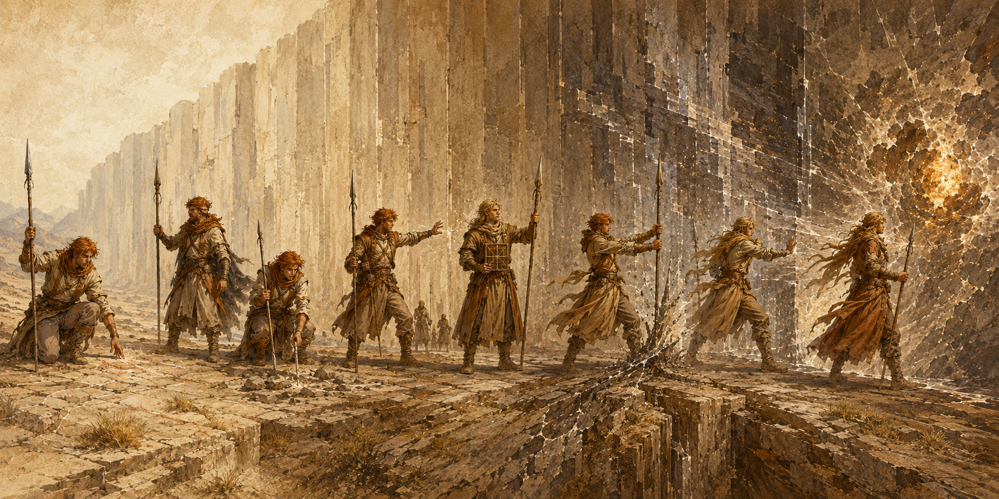
Числовые значения КД, атаки, урона, максимума хитов, скорости, инициативы и спасбросков — итоговый ранговый профиль текущей ступени и не складываются между строками. Повышения характеристик, напротив, получают при каждом переходе на новый ранг и они накапливаются.
На каждом ранге II–VIII увеличьте на +1 две различные характеристики по выбору. На каждой ступени выбор можно сделать заново. До V ранга действует обычный предел 20. На VI ранге новое повышение может довести характеристику до 22, на VII–VIII — до 24. Если пункт невозможно применить из-за предела, он не сохраняется и не переносится.
Бонус скорости прибавляется к базовой скорости ходьбы. Ранговый бонус атаки действует на атаки оружием и безоружные атаки самого персонажа против любых целей; бонус урона добавляется к каждому попаданию такой атакой и имеет тип основного урона атаки. Эти бонусы не применяются к атакам плетениями, СЛ плетений или урону плетений. Ограничение на существ с тегом «Аномальное происхождение» относится только к способности «Точно в цель».
Бонус КД постоянный и складывается с обычным расчётом КД. Повышение максимума хитов само по себе не восстанавливает текущие хиты. Бонус спасбросков действует на все спасброски, включая спасброски от смерти. Общие ранговые параметры работают независимо от расстояния до Стены.
VII. Способности I–IV
I · Помеченный Швом
⚔ Стена Стенные метки. Пока вы лидер маршрута, снимаете именно помеху Шума Узора на навигацию Мудростью (Выживание), вызванную отсутствием проводника или меток. Другие источники помехи сохраняются.
⚔ Стена Привязки маршрута. 1 раз за каждый час пребывания в Ореоле, если ваша проверка «Держать маршрут» провалена на 5 или больше, можете понизить тяжесть: вместо STAB −2 и Удара среды происходит обычный провал STAB −1 без Удара среды.
⚔ Стена Срыв ложного ориентира. 1/долгий отдых, когда срабатывает «Ложный ориентир», отмените вызванную им помеху на следующую проверку «Держать маршрут». Если эта проверка всё равно провалена, дополнительная потеря 1d4 часов от Ложного ориентира не происходит.
◈ Аномалия Чутьё временной аномалии. Пассивно ощущаете временную аномалию в 300 фт, знаете направление и примерную дистанцию, но не её рейтинг и тип. Проверка не требуется.
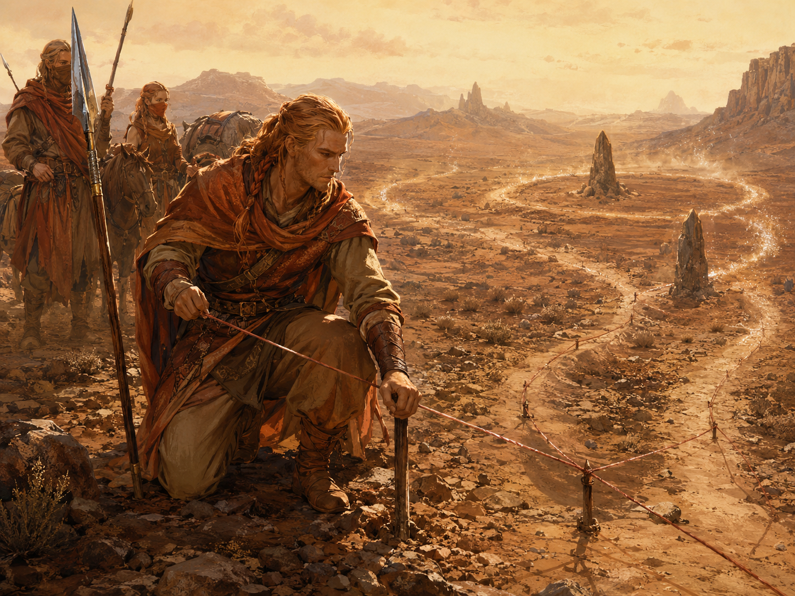
II · Страж Узла Прохода
⚔ Стена Стабилизация маршрута. Когда вы лидер, «Держать маршрут» совершается с преимуществом. 1 раз за час обычный провал может не уменьшить STAB вместо STAB −1. Провал на 5+ этой частью способности не отменяется. Если тот же тяжёлый провал уже смягчён «Привязками маршрута», Стабилизация к нему не применяется.
⚔ Стена Плащ Тени. 1/долгий отдых, бонусное действие. Получаете временные хиты в количестве, равном уровню персонажа, и до начала своего следующего хода имеете сопротивление всему урону.
◈ Аномалия Кожа Ореола. Реакция, 1/короткий отдых. Когда вы получаете физический урон среды временной аномалии, совершите проверку Мудрости СЛ 10 + R. При успехе получаете сопротивление этому конкретному урону; при провале урон не меняется.
◈ Аномалия Распознавание аномалии. Действие, радиус 60 фт. Мудрость (Восприятие) СЛ 12. При успехе узнаёте рейтинг R и тип: A Энергия, B Иные измерения или C Тел’аран’риод. При провале узнаёте только тип.
III · Ведущий Каравана
⚔ Стена ◈ Аномалия Петлярез. Одно общее использование 1/короткий отдых, без действия или реакции. Выберите один режим при срабатывании: (1) при пороге STAB 6–4 отменить потерю 1d4 часов, сохранив Удар среды; либо (2) когда эффект среды Стены или временной аномалии должен сбить вас с ног или обнулить скорость, остаться на ногах и сохранить скорость.
◈ Аномалия Точно в цель I. Ваши атаки оружием и безоружные атаки по существам с тегом «Аномальное происхождение» совершают критическое попадание на 19–20.
⚔ Стена ◈ Аномалия Шкура Стены. Постоянное сопротивление физическому урону среды Стены и временных аномалий. Не действует на прямые атаки существ.
◈ Аномалия Точка схлопывания. Действие. Мудрость (Восприятие) СЛ 10 + R. При успехе отмечаете более выгодную узловую точку для Пирамидки Ордена; при провале действие потрачено, повторная попытка возможна в следующий раунд. Эффект на извлечение описан в разделе IX.
IV · Хранитель Окна
⚔ Стена ◈ Аномалия Щит от Удара среды. Реакция, 1/короткий отдых. Когда Удар среды или иной эффект среды временной аномалии заставляет союзников в пределах 30 фт совершить спасбросок, используйте реакцию до бросков. Эти союзники получают преимущество на спасбросок и сопротивление урону, непосредственно причинённому этим срабатывающим эффектом, до завершения его разрешения.
⚔ Стена Заслон Каравана. 1/короткий отдых, бонусное действие, 1 минута. Союзники в ауре 20 фт получают +1 КД. При активации выберите дробящий, колющий или рубящий урон от немагических источников; до окончания ауры вы имеете сопротивление выбранному виду.
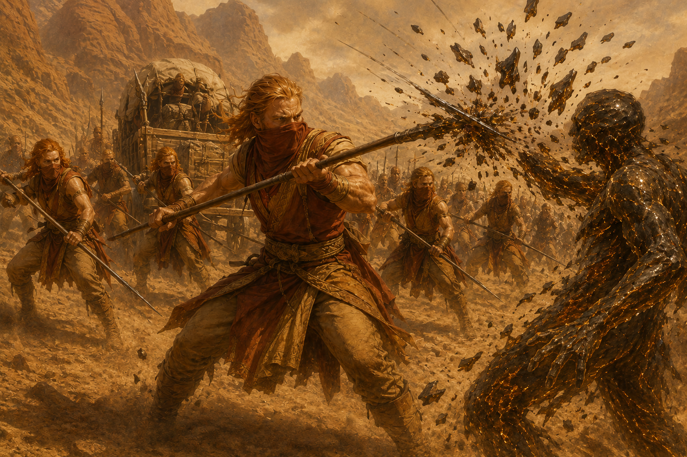
VIII. Способности V–VIII
V · Страж Дрейфа
⚔ Стена ◈ Аномалия Работа с Меткой Узора. 1/долгий отдых, когда вы получили Метку и уже бросили первый 1d6, бросьте второй 1d6 и выберите один из двух результатов. Кроме того, 1 раз за 24 часа можете совершить проверку «Распознавания аномалии» с преимуществом.
◈ Аномалия Точно в цель II. Против существ с тегом «Аномальное происхождение» критический диапазон становится 18–20. При каждом попадании оружием или безоружной атакой наносите дополнительно 1d6 урона того же типа, что основной урон атаки.
◈ Аномалия Иммунитет среды. 1/долгий отдых, бонусное действие. Проверка Мудрости СЛ 10 + R. При успехе на 1 минуту получаете иммунитет к физическому урону среды этой временной аномалии; при провале сохраняется обычное сопротивление Шкуры Стены.
◈ Аномалия Быстрая точка. «Точка схлопывания» теперь может выполняться бонусным действием, с той же СЛ и тем же эффектом.
◈ Аномалия Предвестник. Пассивно чувствуете формирующуюся временную аномалию за 5 минут до проявления в радиусе 600 фт. Если встреча или событие непосредственно вызваны именно этой обнаруженной аномалией, сопровождаемая вами группа не может быть застигнута врасплох в первый раунд этой встречи.
VI · Голос Гребня
⚔ Стена Якорь формы. 1/долгий отдых, без действия. Когда STAB должен стать 0, вместо этого он становится 1. Каждый участник сопровождаемой группы, включая вас, делает спасбросок Телосложения СЛ 15; при провале получает 1 уровень истощения, при успехе — ничего. Затем немедленно проводится одна встреча с существами аномального происхождения. После встречи STAB остаётся 1.
Аномальная стойкость. При получении VI ранга один раз выберите дробящий, колющий или рубящий урон от немагических источников. Вы постоянно имеете сопротивление выбранному виду, а также иммунитет к состояниям испуган и очарован.
⚔ Стена ◈ Аномалия Броня Стены. Постоянный иммунитет к физическому урону среды Стены и временных аномалий. Не действует на прямые атаки существ.
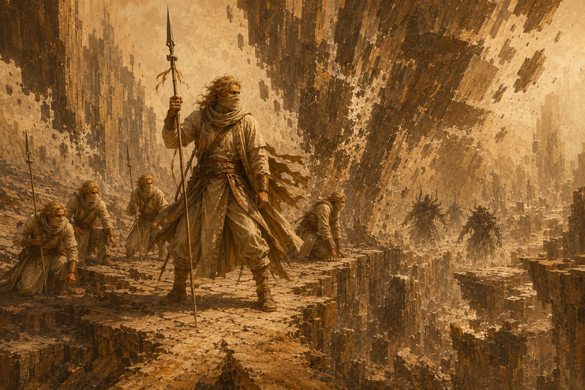
VII · Архистраж Проходов
⚔ Стена Фиксация окна. 1/неделю. В течение 1 минуты непрерывно прокладываете и удерживаете локальный коридор/окно дрейфа, затем совершаете проверку «Держать маршрут» по СЛ текущей зоны. Успех фиксирует геометрию окна на 10 минут. Это не отменяет Удары среды, существ или иные события. Провал: STAB −2 и немедленный Удар среды.
Режим Бастиона. 1/долгий отдых, бонусное действие, 10 минут. Получаете преимущество на все спасброски, временные хиты = 3 × уровень персонажа и сопротивление огню, холоду и психическому урону. Оставшиеся временные хиты исчезают по окончании режима.
◈ Аномалия Живая точка. Если вы находитесь в 30 фт от Пирамидки Ордена в момент её установки и остаётесь в пределах 30 фт до завершения установки, операция получает +1 к эффективному рейтингу извлечения. Сочетается с успешной Точкой схлопывания до общего максимума +2. Несколько Стражей не увеличивают максимум.
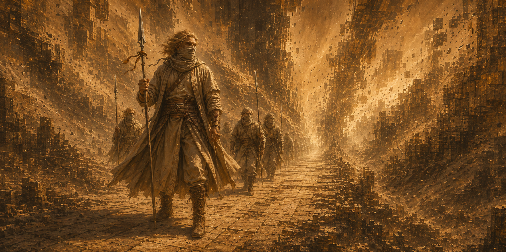
VIII · Проводник
⚔ Стена Метод Гребня. Не чаще одного раза за 30 суток можете провести группу через Ядро так, что каждый участник за весь переход делает только один спасбросок Телосложения СЛ 18 и один спасбросок Мудрости СЛ 18 вместо повторения каждые 10 минут. Последствия этих спасбросков остаются обычными для Ядра.
Легендарная устойчивость Стены. 1 раз за 24 часа, когда вы проваливаете спасбросок, можете считать его успешным без действия. Находясь во временной аномалии, вместо этого можете потратить то же использование, когда союзник в пределах 60 фт проваливает спасбросок, и считать его результат успешным.
◈ Аномалия Точно в цель III. Против существ с тегом «Аномальное происхождение» критический диапазон становится 17–20. Дополнительный урон Точно в цель II заменяется на 1d8 того же типа, что основной урон атаки.
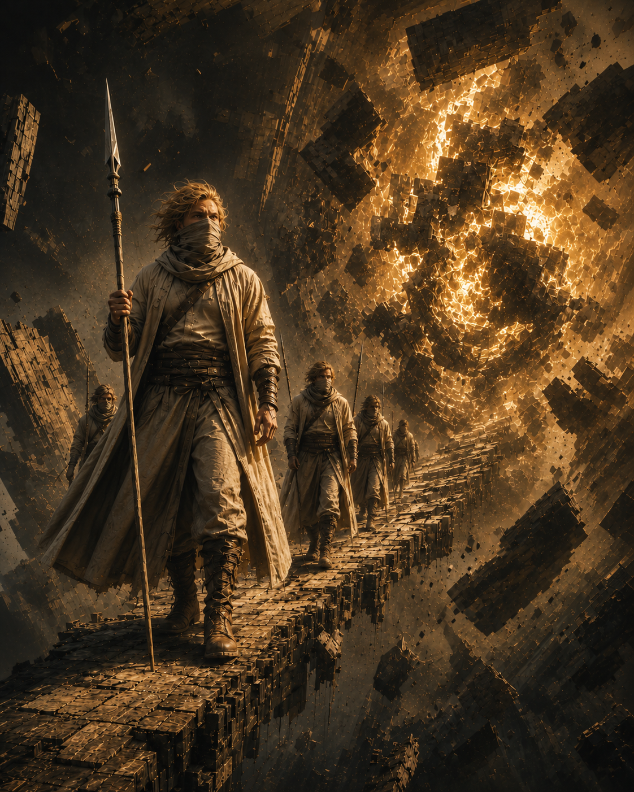
IX. Совместная работа с Орденом
Иерархия Аномальной Стены не входит в Орден Стражей Узора и не подчиняется ему. Стражи Проходов специализируются на маршрутах, окнах, караванах и выживании на фронте. Орден исследует и стабилизирует временные аномалии, работает с Пирамидками и извлечением опасного избытка энергии. Совместные операции распространены именно потому, что эти компетенции дополняют друг друга.
Пирамидка и узловая точка
Пирамидка Ордена сама способна определить обычную подходящую узловую точку при активации. Страж Проходов не делает операцию возможной — он способен найти более выгодную точку извлечения.
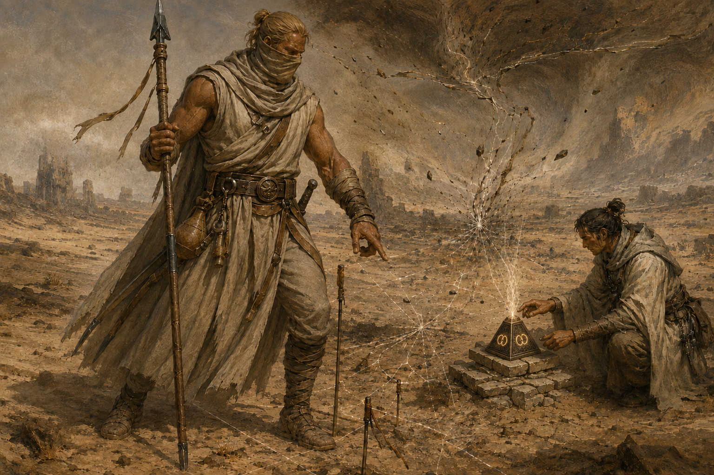
Успешная Точка схлопывания даёт Rэфф = R +1. Живая точка Архистража может дать ещё +1, общий максимум — R +2. Фактический рейтинг аномалии не меняется. Rэфф применяется только к длительности извлечения и таблицам количества захваченной энергии/редкости результата. Финальная СЛ Пирамидки остаётся 10 + фактический R; среда, существа и иные параметры аномалии также используют фактический R.
При использовании текущих правил Ордена длительность извлечения рассчитывается как 1d10 + Rэфф − ранг Иерархии оператора Ордена, минимум 1 раунд. Финальный спасбросок по-прежнему использует фактический R, а не Rэфф.
Так более выгодная точка способна увеличить выход энергии и шанс редкого результата, но операция обычно занимает больше времени — повышение эффективного рейтинга не является бесплатным ускорением.